몸의 흐름을 살핍니다.
체형과 생활 습관에서 시작되는 균형을 읽습니다.
LINE, BALANCED.
체형과 생활 습관에서 시작되는 균형을 읽습니다.
덜어낼 곳과 살려낼 곳을 구분해 계획합니다.
변화가 부담 없이 생활에 스며들도록 돕습니다.
NOT MORE, BUT MORE PRECISE.
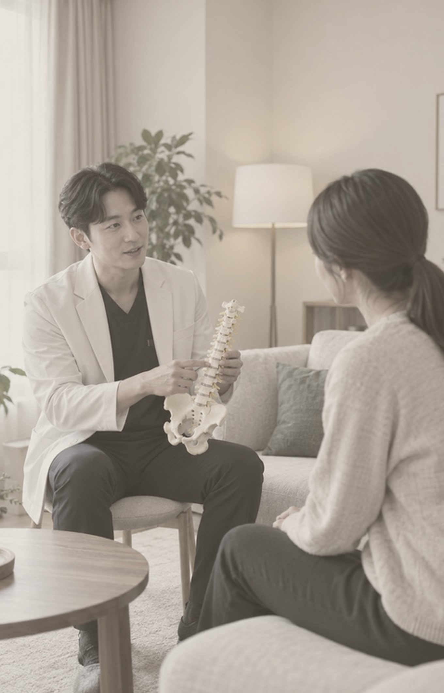
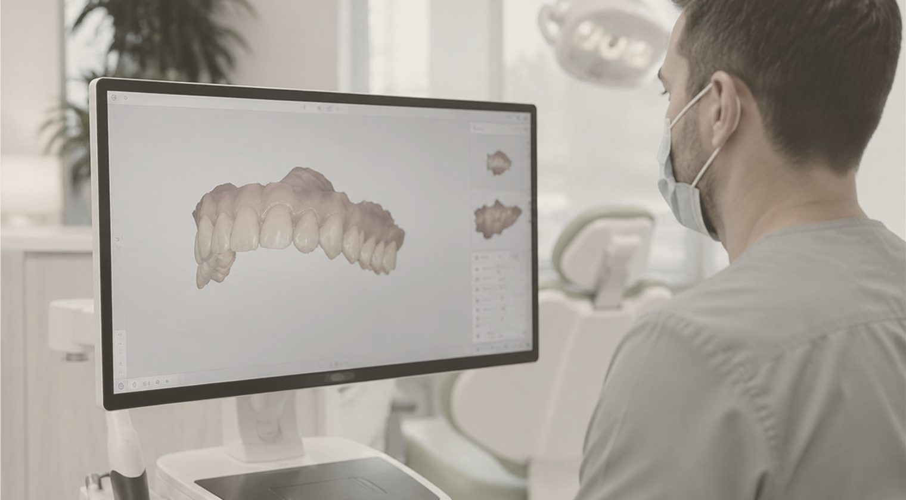
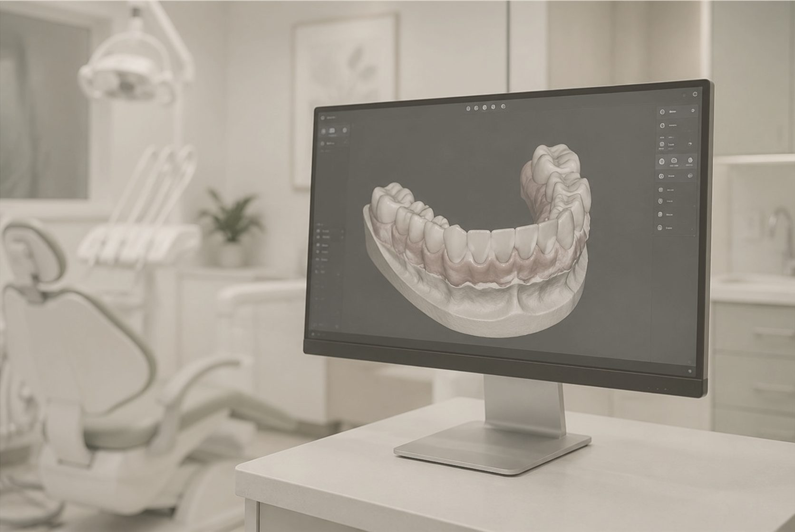
WHY GYEOL:ON
비수술 바디 컨투어링에 집중해 진단과 시술의 밀도를 높입니다.
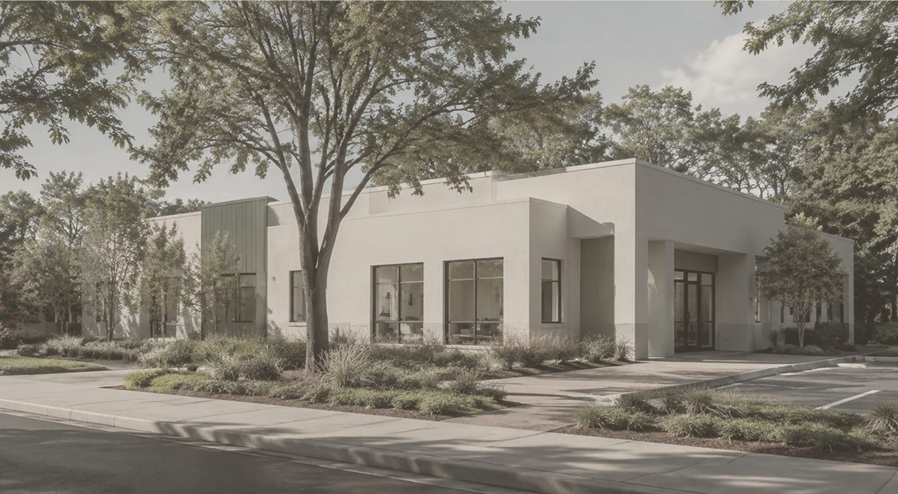
부위별 두께와 피부 상태에 맞춰 횟수와 강도를 세밀하게 조절합니다.
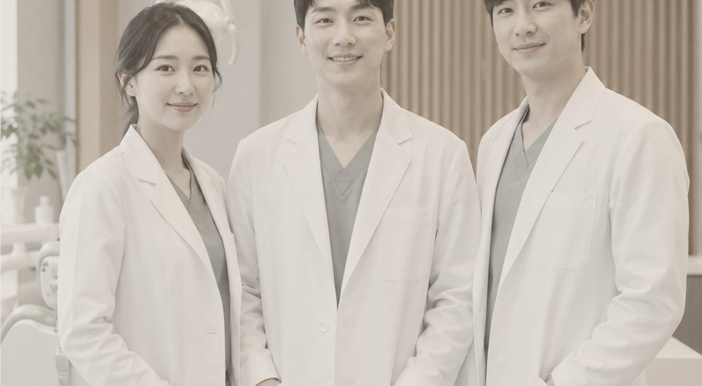
처음 세운 계획이 흔들리지 않도록 한 의료진이 전 과정을 맡습니다.
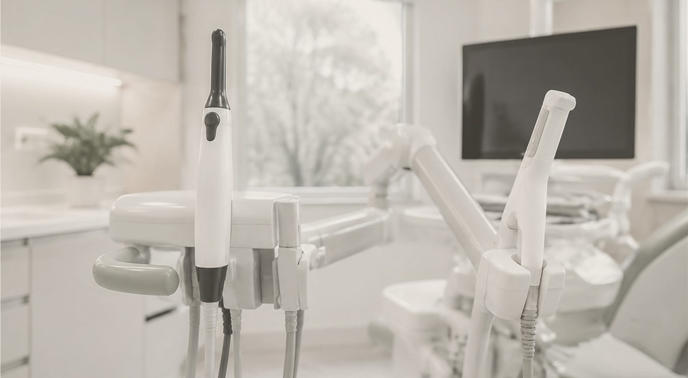
무리한 패키지보다 필요한 프로그램을 충분한 시간으로 진행합니다.
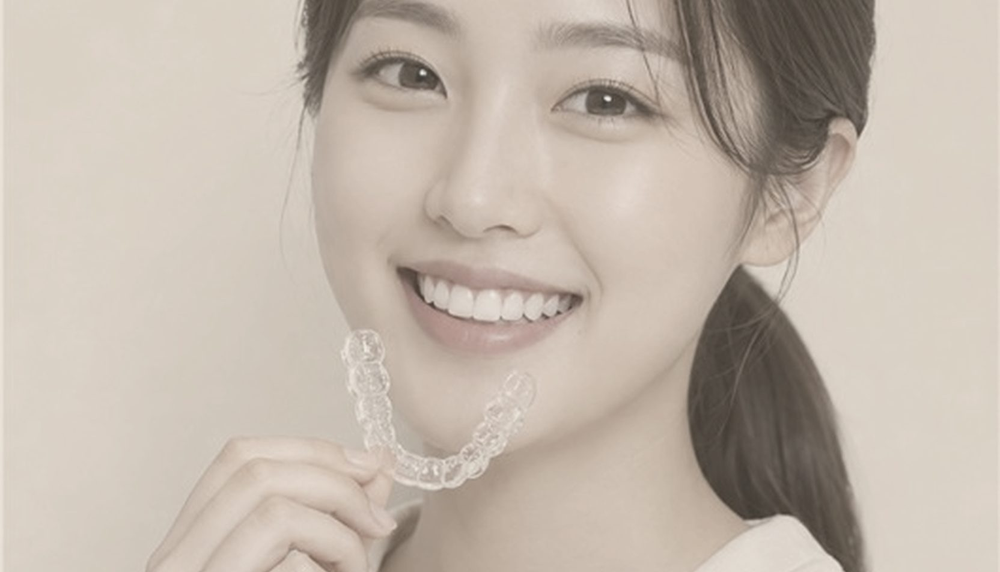
대표원장 소개
정확한 판단과 함께,THE GYEOL:ON STANDARD
주어진 시간을 계획과 시술에 집중합니다.
덜어야 할 부분은 섬세하게, 지켜야 할 균형은 자연스럽게 남기겠습니다.
VIEW MORE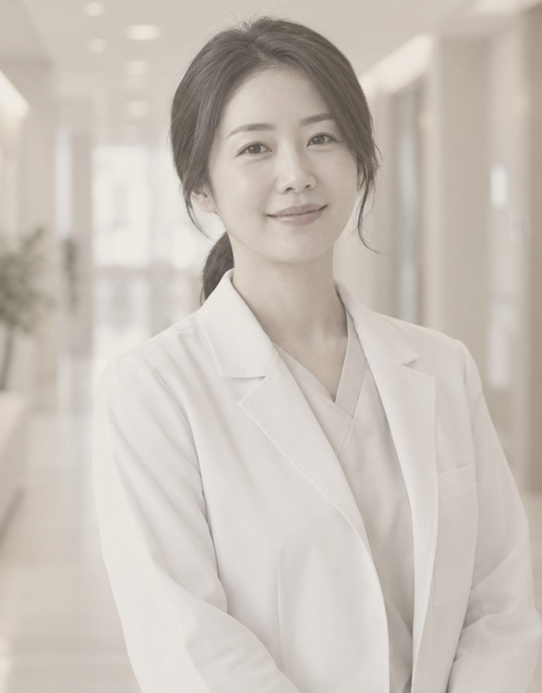
CLINIC
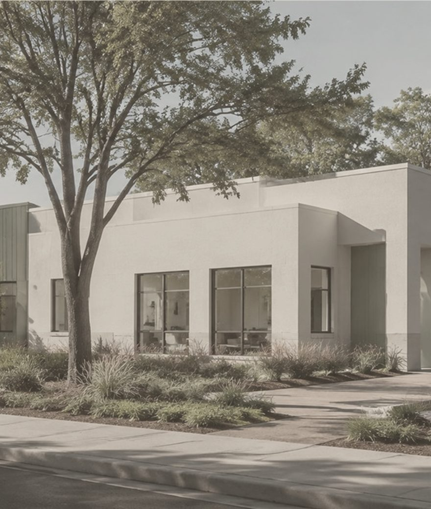

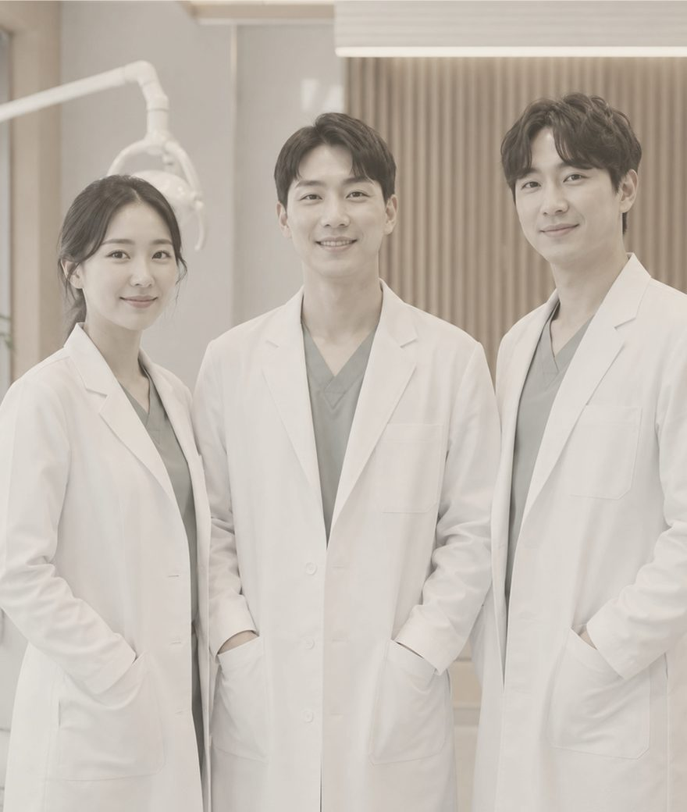


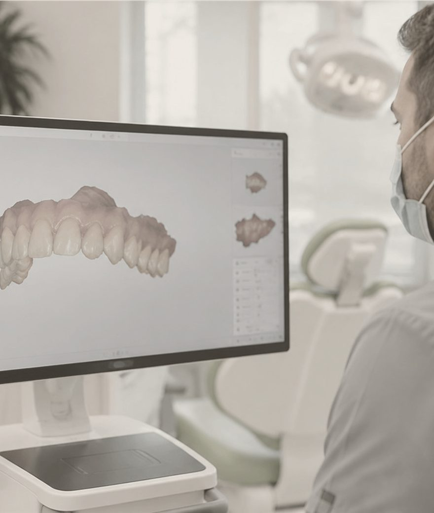